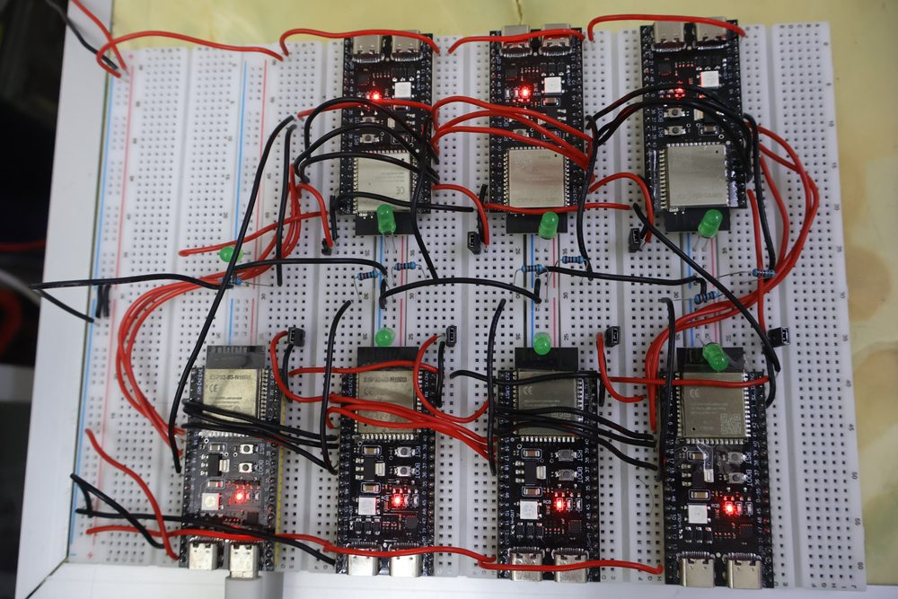

Seven computers, 1.53 watts, and a builder who tells you upfront it outputs gibberish
A 24-layer transformer is running across seven separate computers wired in a ring, and the whole cluster draws 1.53 watts — roughly a four-hundredth of one datacenter GPU. Every part of that pipeline works: the tokenizer, the ternary matrix kernels in hand-written assembly, the KV cache, the SPI hand-off, the sampler. And the model at the end produces nonsense — which the builder states plainly in his own setup guide, before you've flashed a single board: "This script just partially train, the loss will hit somekind of 8.0. It will be just spitting out random tokens."
That gap — a finished distributed inference engine wrapped around admittedly untrained weights — is a distinction most on-device AI coverage collapses.
Source & credit: the project, firmware, quantization tooling and photo are the work of Low-Zi-Hong. Full repo, MIT licensed: github.com/Low-Zi-Hong/ESP32s3-LLM-Cluster. All figures below are the builder's own, from the repo's README and workflow guide, except where we say otherwise.

ESP32-S3-N16R8 — the 16 MB flash / 8 MB PSRAM variant, which is what makes the per-node budget below fit.Yes, this is another ESP32 post. No, it isn't the same one.
We should say this first, because we've noticed it too: this is the fifth ESP32-S3 language-model project we've covered since August 1. The previous four — slvDev's flash-resident 28.9M model, Carloscodix's on-chip training run, Salman Farsi's fully dense 15.2M transformer, and Andris Gauračs's from-scratch C99 engine — were all single-board builds, asking how much model you can cram into one chip.
This one asks the opposite question. Instead of shrinking a model until it fits one microcontroller, it splits a model too big for any of them across seven and pays in wires — the first distributed build in the group, closer conceptually to Tim Schupp's two-node Strix Halo cluster than to any of the ESP32 projects, but assembled from single-digit-dollar parts.
How you cut a transformer into seven pieces
The model is a 0.5B-parameter Qwen2 architecture: hidden size 896, 24 transformer blocks, 14 query heads against 2 key/value heads in grouped-query attention, head dimension 64. The split follows the layer boundaries exactly.
The master board holds the BPE tokenizer, the embedding table and the LM head, and does the sampling. Each of the six compute nodes holds four consecutive blocks — node 1 gets layers 0–3, node 2 layers 4–7, on to node 6 with layers 20–23. A token's hidden-state vector enters the master, walks the chain over SPI, and returns to the master to become the next token. It's pipeline parallelism in the textbook sense, on $5 parts over jumper wire.
Each board carries two SPI channels — one master, one slave — making it a true daisy-chain rather than a shared bus, with the last node's line running back to the master's GPIO 3 to signal readiness.
| Quantity | Figure | Note |
|---|---|---|
| Boards | 7 (1 master + 6 nodes) | ESP32-S3-N16R8, per the photo's legible module markings |
| Weight precision | 1.58-bit ternary | BitNet {−1, 0, 1}; 4 weights packed per byte |
| Embedding precision | INT4 | LM head tied to the same table |
| Per-layer footprint | ~3.82 MB | packed ternary weights + FP16 scales & norms |
| Per-node flash | ~15.3 MB (4 layers) | against a 16 MB partition — 95% full |
| Master flash | ~14.0 MB + 64 KB | INT4 embeddings; final RMS norm in its own partition |
| Vocabulary | pruned to 32K tokens | the builder's stated ceiling for 16 MB of flash |
| Context window | 512 tokens | KV cache lives in each node's PSRAM |
| Per-node latency | 1.3 s | builder's measurement |
| Power, idle | ~1.17 W | measured at 5 V, 0.23 A |
| Power, inferencing | ~1.53 W | 0.3 A; see note on the stated voltage below |
Source: workflow.md, "Model Specification" and "Powering" sections. The active-power line reads "0.5V and 0.3A around 1.53W" — 0.5 V × 0.3 A is 0.15 W, not 1.53 W, so the stated voltage is evidently a typo for 5 V, consistent with both the arithmetic and the idle measurement on the line above it. We're quoting the wattage the builder reports, not re-deriving one.
The number that matters: 1.3 seconds, six times over
The builder gives one latency figure — "currently each node spent 1.3s to inference" — while explaining that the architecture is unbounded: "if u have 100 of them then it will be 400 layers of model. Just that the time of inference will linearly growth while u scale up."
That last clause is the whole story, and it runs exactly backwards from how clustering usually works. Adding machines to a normal cluster buys throughput. Adding boards to this one buys model capacity and costs latency, linearly, because the boards sit in series, not parallel — each node must finish its four layers before the next can start. Six nodes at 1.3 seconds each puts a token on the order of eight seconds to cross the chain. That arithmetic is ours, not the builder's, and it excludes the master's own work and every SPI transfer, so treat it as a floor, not a benchmark. The repo ships a /bench command, so the real end-to-end figure is measurable by anyone who builds one — it just isn't published, and we won't invent it.
Why 1.53 watts is the figure worth stealing
Set the speed aside and look at the power, because that's where this build generalizes. Seven microcontrollers, all awake and computing, come to about 1.53 watts — and the gap between idling and actively running a transformer is roughly 0.36 W. Inference here is nearly free relative to just having the hardware switched on.
Phones don't get that ratio. On a phone the marginal cost of running a model is enormous against idle — the reason we've written about an iPhone 16 Pro losing 44% of its throughput by the eighth reply and llama.cpp costing 2.3x the energy per token of Apple's own path. Ternary weights on microcontrollers invert it: there is no thermal cliff to fall off, because there was never enough heat to matter. The trade is eight seconds a token.
The honesty is the feature
Most projects at this stage would ship a cherry-picked screenshot of one good completion and let you assume the rest. This repo's setup guide does the opposite, in three places.
It tells you the fine-tune in qat_158.py is partial, that loss plateaus around 8.0, and that output will be random tokens — and points you at a verification script so you can confirm it before flashing seven boards. It warns that the 2-bit ternary packing order in the Python tooling must match the unpacking logic in the C and assembly exactly, because a mismatch "won't crash anything — it'll silently corrupt every weight and produce degenerate/repetitive output." And it warns that flashing the wrong layer range to the wrong position in the chain "won't throw an error — it will silently produce garbage output," because nothing in the protocol knows which layers a board should hold.
Those last two are the same class of bug we keep finding in production engines, at a fraction of the scale: llama.cpp silently zero-padding corrupted LoRA files, an ordering bug disabling sliding-window attention, a prompt cache handing one session's content to another. Wrong-but-fluent output with no error anywhere is this field's characteristic failure mode, and a hobbyist documenting it before you hit it is doing something a lot of shipping software doesn't. The repo also credits its lineage properly — a single-node ESP32-S3 story generator, esp32s3-distributed-ai for the multi-node design, and Microsoft's BitNet for the ternary scheme.
Why it matters here
The wedge this blog keeps returning to is that the model should come to your data rather than the reverse, and the usual objection is that the hardware near your data isn't good enough. This build cuts both ways at once.
One way, it's an existence proof with the ceiling removed: model capacity on microcontrollers isn't bounded by any single chip's flash, and the power budget barely moves as you add chips. The other way, it's a reminder that a working runtime and a working product are different achievements. Everything hard about the engineering is finished; the thing a user actually wants — a model that answers — needs training compute this build never had. We ship a catalog of other people's trained weights for exactly that reason.
Anyone with seven boards, jumper wire and a GPU good enough to finish the fine-tune could close that gap. The instructions are all there, MIT licensed — including the part that tells you what will go wrong.
Discuss this on the forum → — if you build this chain and run /bench, we'd genuinely like the end-to-end number.